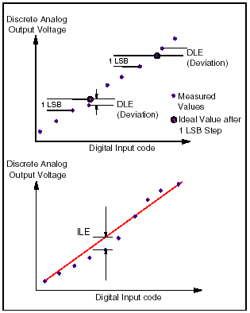
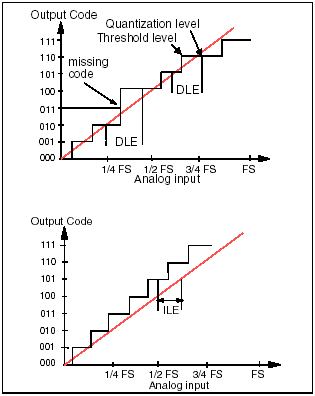
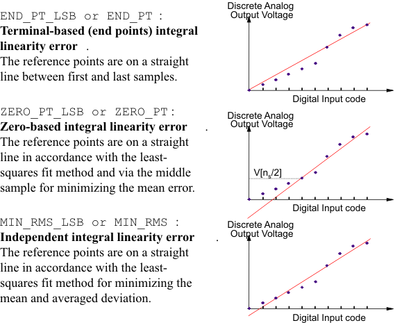
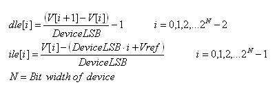
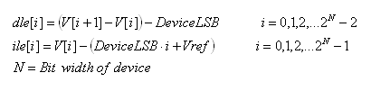
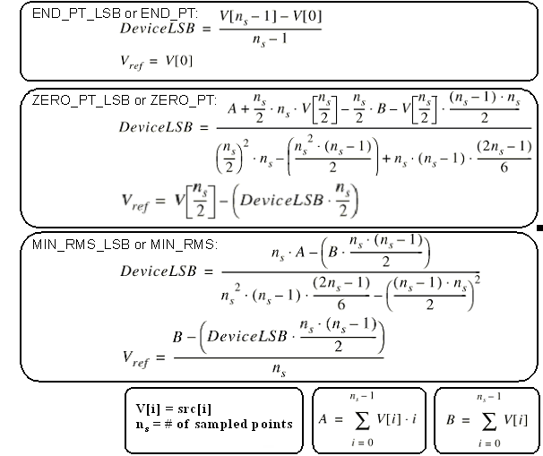

DSP_LINEAR
This API computes the differential linearity error (DLE) and integral linearity error (ILE) for a D/A converter or A/D converter.
For D/A converter, each element of src must contain the output analog levels that resulted in the corresponding digital code.
For A/D converter, each element of src must contain the threshold levels at edges of output code or quantization levels (the middle of two adjacent threshold levels).
DLE is the deviation of the actual step size from the ideal step size of 1 LSB. ILE is the deviation of each analog level from a calculated straight line that means the ideal linearity. The following shows the definitions of DLE and ILE of the D/A converter and A/D converter.


ile_type determines the type of ILE as follows. The following figures show the straight lines of the D/A converter's linearity errors.

The linearity errors are calculated according to the calculation method specified by the ile_type below:
For END_PT_LSB, ZERO_PT_LSB, or MIN_RMS_LSB,

For END_PT, ZERO_PT, or MIN_RMS,

Where,

The maximum, minimum, and maximum absolute values of dle and ile are returned to result declared by the LINEARtype data type as follows:
Member |
Type |
Returned Value |
|---|---|---|
result.dmax |
DOUBLE |
Maximum DLE value |
result.dmin |
DOUBLE |
Minimum DLE value |
result.damax |
DOUBLE |
Absolute maximum DLE value |
result.imax |
DOUBLE |
Maximum ILE value |
result.imin |
DOUBLE |
Minimum ILE value |
result.iamax |
DOUBLE |
Absolute maximum ILE value |
result.dmax_index |
INT |
Maximum DLE subscript |
result.dmin_index |
INT |
Minimum DLE subscript |
result.damax_index |
INT |
Absolute maximum DLE subscript |
result.imax_index |
INT |
Maximum ILE subscript |
result.imin_index |
INT |
Minimum ILE subscript |
result.iamax_index |
INT |
Absolute maximum ILE subscript |
If ile_type=END_PT_LSB, ZERO_PT_LSB, or MIN_RMS_LSB, the unit of the returned linearity error values is LSB.
If ile_type=END_PT, ZERO_PT, or MIN_RMS, the unit of the returned linearity error values is same as the unit of the source array elements. If the source array elements are in volts, the results are also in volts. Hence, convert the returned values to LSB if necessary.
This API is defined in the header file /opt/hp93000/soc/prod_com/include/MAPI/libdsp.h.
Syntax
DSP_LINEAR(ARRAY_D& src, LINEARtype *result,
ARRAY_D& dle, ARRAY_D& ile, INT ile_type);
DSP_LINEAR(DOUBLE *src, LINEARtype *result,
DOUBLE *dle, DOUBLE *ile, INT size,
INT ile_type);I/O |
Parameter |
Description / Range |
|---|---|---|
I |
src |
Source array in which measured quantization or threshold levels of ADC or measured output levels of DAC are stored |
O |
result |
The maximum, minimum, and maximum absolute values of dle and ile arrays are returned to this structure variable Unit: LSB or same as the unit of the source array elements |
O |
dle |
Result array in which differential linearity error is stored Unit: LSB or same as the unit of the source array elements |
O |
ile |
Result array in which integral linearity error is stored Unit: LSB or same as the unit of the source array elements |
I |
size |
Number of elements to be processed 2 ≤ size ≤ 2097152 size ≤ (size of src) size ≤ (size of dle) size ≤ (size of ile) |
I |
ile_type |
Straight line type of ILE END_PT_LSB or END_PT: Connecting the terminal points ZERO_PT_LSB or ZERO_PT: Approximated to minimize peak deviation MIN_RMS_LSB or MIN_RMS: Approximated to minimize RMS |
Example
DAC linearity test
This example performs a DAC linearity test. DSP_LINEAR calculates the INL and DNL of the result waveform. DGT_pin is a parameter defined in this test method.
int off_line, debug, GlobalOverOn;
double dmin,dmax;
int imin,imax;
ARRAY_D dac_wave,dac_wave2,dac_dnla,dac_inla;
LINEARtype dac_lin;
ARRAY_I esites, csites; // Enabled Sites array
int nsites; // max number of configured Sites
int m, n, k;
int start, end;
ON_FIRST_INVOCATION_BEGIN() ;
GET_TESTFLOW_FLAG("debug_analog",&debug);
GET_TESTFLOW_FLAG("global_overon", &GlobalOverOn );
GET_SYSTEM_FLAG("offline",&off_line);
GET_ENABLED_SITES(esites);
GET_CONFIGURED_SITES(csites);
nsites = csites.size() ;
CONNECT();
/* connect and activate analog module trigger line**/
Routing.pin(DGT_pin).connect(TM::SINGLE);
DGT( DGT_pin ).enable() ;
/* perform the test */
DIGITAL_CAPTURE_TEST( 1.0 ) ;
/* deactivate analog module trigger line and disconnect */
DGT( DGT_pin ).disable() ;
Routing.pin(DGT_pin).disconnect();
ON_FIRST_INVOCATION_END() ;
/* retrieve measurement data */
dac_wave = DGT(DGT_pin).getWaveform();
/* perform computation */
DSP_MINMAX(dac_wave,&dmin,&dmax,&imin,&imax); // get amplitude of ramp
// strip leading and trailing constants from dac ramp
start = 0;
while ((dac_wave [start] > dmin+0.001) && (start < dac_wave.size()))
{
start = start+1;
}
end =dac_wave.size()-1;
while((dac_wave [end] < dmax-0.001) && (end > 0))
{
end = end - 1;
}
m = end - start+1;
dac_wave2.resize(m);
if ( m > 1 )
{
k=0;
for (n=start; n<= end; n++)
{
dac_wave2[k] = dac_wave[n];
k++;
}
DSP_LINEAR( dac_wave2, &dac_lin, dac_dnla, dac_inla, MIN_RMS_LSB ); // caculate INL, DNL
}
else
{
dac_lin.iamax = -999.99;
dac_lin.damax = -999.99 ;
}
// set fail value for constant wave
if ( debug )
{
PUT_DEBUG ( DGT_pin, "Lin_dac_wave_raw", dac_wave );
PUT_DEBUG ( DGT_pin, "Lin_dac_wave_pur", dac_wave2);
if ( m > 1 )
{
PUT_DEBUG ( DGT_pin, "Lin_dac_dnl", dac_dnla );
PUT_DEBUG ( DGT_pin, "Lin_dac_inl", dac_inla );
}
cout << endl ;
}
/* compare computed result with limits and set pass/fail */
TEST( DGT_pin, "DAC_ILE", dac_lin.iamax);
TEST( DGT_pin, "DAC_DLE", dac_lin.damax);
Functional changes
- Introduced before SmarTest 6.3.2